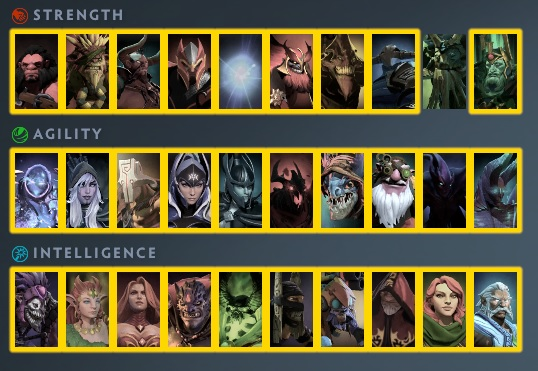

Available Heroes
Hero Guides

Sven:
BUILD
- Assaut Cuirass,Desolator,Heart of Tarrasque,Vampiric blade,Daedalus,hood sword
- After you reach swamp,change vampric sword to Vladimir's offering (if you are first to reach swamp)
BUILD MID
- I haven´t played Sven mid much,but i would keep all items and take red dragon soul.
BEGINNING OF GAME
- At start,you will buy Blight Stone and Ring of Protection
-Always start with your Q,because you can one shot smaller creeps (also bears) and always focus larger creep (otherwise,you won't kill one small )
- I prefer to max W and E first,cause Q loses his power overtime.
-Keep your Ultimate on mid bosses/soul bosses
START OF GAME : MID
Again,same buy and same spell,you can one shot whole wave with just single attack.
-Whenever you have free time,go kill creeps in jungle, or even do Quests for more golds/xp,it is really usefull!
TALENTS
-Go for agility side of talents,and last 2 points spend on 50% more dmg with Bringer (Q) and 200% more dmg from GDS (R)
MID
I wouldn't change talents,but if u want,you can take 50% more cleave damage
GOLD FARMING
-If u want to farm gold,get swamp asap and head to farm where is key located,it is the best for Sven in my opinion,if you are not geared enough,go farm to mines
-Never forget to finish Quests,they are giving u really much gold + whenever u get tome of strenght/int/agi,try to get it to stash (full whole your inventory) and you can sell it for 20K/piece
Mars:
Early Game
- Get regen if needed and Quelling Blade, Battle Fury should be your first item. Once you have it, clearing waves is easy. Buy the attack items first, as you may get lucky with drops (Ring of Health/Void Stone) from forest creeps, then follow it up with Vlad/AC/Heart.
- Some early waves can be difficult (e.g. Pines), focus the commanders and back off if you need to, wait until your skills come off cooldown then attack again.
- In-between waves keep doing the main quest so you can get an early forest soul when your team kills Nature's Prophet, upgrade your AC first so you have Spectral when the mid quest is done.
- Help your pos1 with an early Pudge kill when they are ready.
Mid Game
- Swap between Battle Fury (keep at lvl 1) and Heart for boss waves. Daedalus lvl 1 is also great value, you can swap it later for a pipe or whatever your team needs.
- Continue doing main quests when mid is clear, you want that free village soul from the Pudge quest too.
- Ask your team for a couple of souls, 1-2 from mines onwards is all you need, the rest you can farm yourself. Upgrade AC/MKB.
- Help your pos1 with Nyx if needed.
- You can also get the key to swamp while your pos1 is doing dust.
Late Game
- Focus on getting your Spectral armor maxed and farm gold for your other recipes at dust/swamp.
- It's not important to have all your items upgraded, get snow heart and ac (so it doesn't override teammate ac), and finish the rest if you are able before the team wants to end.
- Your role during the invoker fight is just to spam your skills and not die, keep moving and you shouldn't have a problem. Don't sit in pit of malice and step to the side of meteor/earth splitter.
Sniper
Physical Build
In order to buy: Moon Shard, Desolator, AC, Vampiric, Heart, MBK, consume Moon Shard and get Hood Sword if need survivality, otherwise could go for another MBK.
Talents Agi/Int
Agi ----> Total Damage of the ultimate depends on the total damage.
With this talent MBK works very well, better than Butterfly, Assassin Heart or Daedalus.
Int -----> Change the physical damage type of abilities to magical.
Info: Sniper is super great for taking enemys from far away, that mean you could agro bosses until they limits areas and take down without a hit, specially tiny and nayx.
Sniper could easly beat the game in Normal Mode as solo player, just need to play fast, take wave 15seg after spaw and kill next one in the 45seg so you have 1min and 30seg to push and get souls, go for Spectral instead of Hood Sword so it would be:
Moon Shard, Desolator, AC, Vampiric, Heart, MKB, Consume Moon Shard, get Spectral and replace with another AC. With this build you could beat the game alone even at 100 min mark if you want to, for a quick game still works in Lev 4 or 5 but is ok if not get spectral at all.
Juggernaut:
Item:
1. Assasult Cuirass
2. Desolator
3. Vampiric Sword(Don't upgrade, you will lose lifesteal if you upgrade)
4. Hood Sword
5. Monkey King Bar
6. Heart of Tarrasque
Finish main mission and sell book of stats(book of agi, str, int) that you get from mission for money. when you finished the mission TP directly to base so you can sell the book for full price. Never let your money go beyon 99999, always buy recipes for the next stage and keep them in your stash.
Upgrade order
Assault Cuirass, Desolator, MKB
Heart and Hood can be upgrade later on
Talent: go for Agi Str
Agility go for the cleave 25% to fasten your farm in early game
Strengh go for the 10 hp per creep so you don't need to upgrad your heart in early game
Gameplay(normal)
Go finish mission and get 3 green soul(1 from the mission) and sell the book. upgrade MKB Assault Cuirass and Deso. go to the village to start get the village soul(if you dont have talent yet, go get full green equipment except vampiric sword) and repeat till snow(you might need 2nd carry to help you with first snow if tiny is so strong. so whenever you can, always give 1 soul of the highest level before you go to the next stage to your 2nd carry. for example when you are in mine area and want to go to the dust, go get 1 mine soul for your 2nd carry before going to dust.